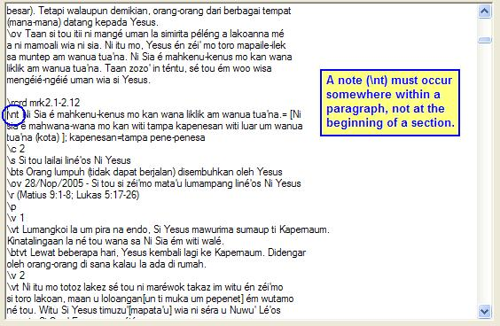

OurWord Help
Import
Error: Missing Paragraph Marker for a Note
This error occurs when there is a note marker (e.g., \nt) that is incorrectly placed.
A note can go just about anywhere, but somewhere above it there must be a paragraph
marker. The note is then attached to that paragraph. Section heads (\s),
picture captions (\cap), and parallel passage references (\r)
are all valid, as well as Scripture paragraphs (\p, \q,
etc.)
An example of thiserror:

The cure is to move the note so that it occurs within a paragraph.
(Note: If you are wanting a note that applies to the entire section, use the
marker \chk, and place it at the beginning of the section.)
After you make the correction, click on the Try Again button to instruct OurWord to resume importing the book; or alternatively you can click on Cancel to abandon the import and fix it in some other editor.
Updated as of Version 1.0.